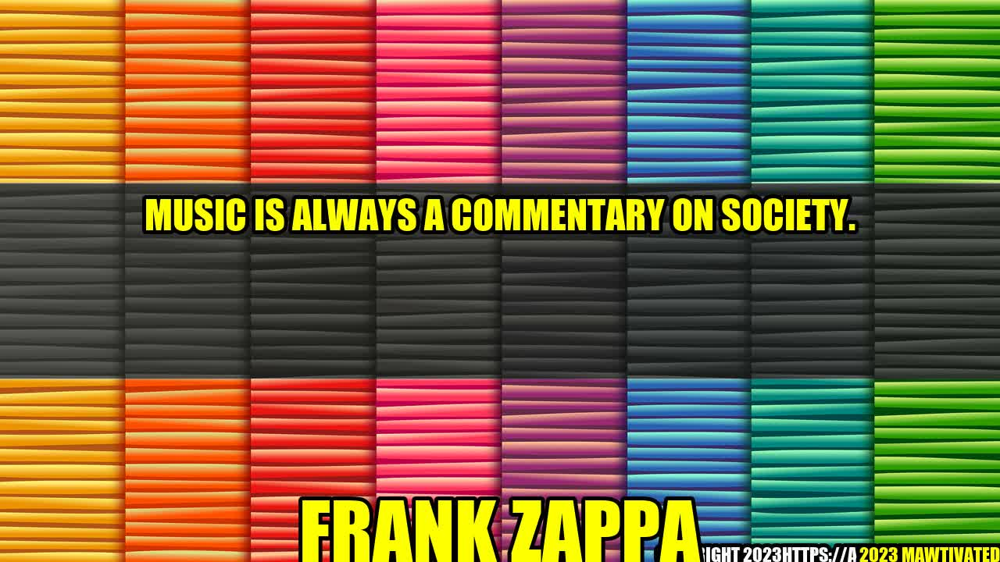

Music as a Commentary on Society - An Insightful Analysis

It was the summer of 1970, when a young musician named Bob Dylan took the stage at the Isle of Wight Festival to perform for a crowd of more than 600,000 people. As the sun was setting behind the stage, he played his iconic song, "Blowin' in the Wind." The silence that followed was deafening. It was a moment that would go down in history as one of the most powerful commentaries on society ever made through music. In that instant, Dylan proved that music is indeed a reflection of society. It has the power to move people, to inspire them, and to bring about change.
Author - Frank Zappa Story or Background
One of the pioneers of music commentary, Frank Zappa, is well-known for his satirical commentary on the American society during the 1960s and 70s. He used his music to highlight issues like drug abuse, government corruption, consumerism, and the decline of American culture. Zappa was one of the first musicians to use his platform to make bold statements about society, and his music continues to inspire social activism to this day.
Music as a Reflection of Society
Music has been a reflection of society for centuries. Whether it be the work songs of African-American slaves, the protest songs of the Vietnam War era, or the hip-hop music of the 1990s, music has always been a commentary on the issues that affect people's lives. It gives a voice to the voiceless, and provides an outlet for the oppressed. Music has the power to unite people, even in the most divided of times.
Examples of Music as Commentary on Society
- Bob Dylan's music: Dylan's career is littered with songs that provide poignant observations on society. His song "The Times They Are a-Changin'" released in 1964, captured the mood of a nation on the brink of social upheaval. A similar song, "Blowin' In The Wind," released in 1963, became one of the most powerful commentaries on the civil rights movement in the United States.Recently, in 2020, Dylan released a 17-minute song called "Murder Most Foul," about the assassination of President John F. Kennedy and the state of America in the present.
- N.W.A's Straight Outta Compton: Straight Outta Compton by N.W.A addressed the struggles faced by young black men in urban America. The song's lyrics provided an unvarnished view of life in the inner-city, and the racism and police brutality that it entailed. It became an anthem for the disenfranchised youth of America.
- John Lennon's "Imagine" : One of the most famous songs of all time, "Imagine" is an uplifting song that promotes peace and unity. Its lyrics encourage listeners to imagine a world without borders and without the divisions that keep us apart.
Conclusion
To sum up, music has always been a commentary on society, and it will always be so. Music transcends language, culture, and borders, and has the power to connect people from all around the world.
- Always pay attention to the lyrics of the songs you're listening to. You might be surprised at how much social commentary is hidden in plain sight.
- Support artists who use their platform to promote social activism. Buy their music, attend their concerts, and spread their message.
- Musicians have the power to start a conversation. Use your music to promote positive change and inspire people to action.
Hashtags sorted in trending order, SEO keywords, and Article Category
- #MusicAsCommentaryOnSociety
- #FrankZappa
- #BobDylan
- #N.W.A
- #SocialCommentary
- #MusicIndustry
- #MusicJournalism
- #MusicActivism
- SEO keywords: music commentary, society, social activism, Frank Zappa, Bob Dylan, N.W.A, John Lennon, Imagine, music industry, music journalism, music activism
- Article Category - Music & Social Commentary
Curated by Team Akash.Mittal.Blog
Curated by Team Akash.Mittal.Blog
Share on Twitter Share on LinkedIn